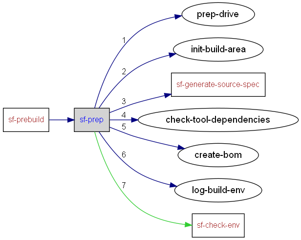

|
Helium API | ||||||
| prev next | frames no frames | ||||||
Location
D:\maintools\sf-config\common\build.xml:72:
Conditional execution
No conditions on target execution.
| Name | Edit status |
|---|---|
| User editable properties | |
| build.drive | recommended |
| Internal properties | |
| temp.build.dir | never |

<target name="sf-prep" depends="prep-drive,init-build-area,sf-generate-source-spec,check-tool-dependencies,create-bom,log-build-env">
<echo>[SF-PREP]</echo>
<!-- Test for the disk space we would like for this build -->
<fail>
<condition>
<not>
<or>
<isset property="sf.suppress.drive.space.check"/>
<hasfreespace partition="${build.drive}" needed="${sf.drive.space.needed}"/>
</or>
</not>
</condition>
Insufficient space to run this build to completion. (Was looking for ${sf.drive.space.needed}.) To suppress this check, set the property sf.suppress.drive.space.check to any value.
</fail>
<tempfile property="prep.dynamic.config" suffix="ant.xml" destdir="${temp.build.dir}"/>
<if>
<not><isset property="sf.suppress.buildenv.check"/></not>
<then>
<echo message="Checking build Environment. To suppress this check set property sf.suppress.buildenv.check to any value"/>
<runtarget target="sf-check-env"/>
</then>
</if>
</target>
|
Helium API | ||||||
| prev next | frames no frames | ||||||